Colour-coding your programme
For event organisersNot an organiser?
Colour by session, track or presentation type
Create a striking and visually engaging program. Choose from a full colour palette including RGB, HEX and colour picker Colour by session, track or presentation type#
Event dashboard → Conference → Program ➞ Builder ➞ Settings (top right) ➞ Pick colours
Skip to
Applying colour by track or presentation type
The colour tool bar will appear at the bottom of the screen.
The first 5 icons are tools, the remainder are the colours from the standard palette.
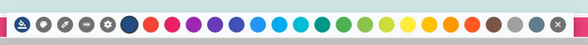
Selecting colours
The paint bucket icon will reflect the current chosen colour.
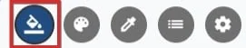
Pick your chosen colour by clicking on it. The paint bucket icon will change to your chosen colour.
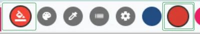
The palette
This tool will allow you to select custom colours.
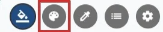
Click on the icon, and then in the bar shown below.
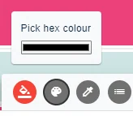
This will open up the custom colour picker (the style of this may vary depending on your browser) where you can pick from a gradient panel from a basic palette of colours, enter HSL or RGB or HEX codes. (Click on the arrow to toggle between the different formats) Once you have completed your colour picking, click outside of the colour picker.
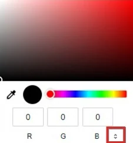
Your chosen colour will appear in the bar, and the paint bucket icon. You can then apply the colour to a session.
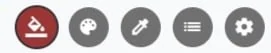
The pipette
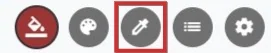
Hover the pipette over any of your sessions and click to select the colour of a particular session.
Colouring your sessions
To change or add a colour to sessions individually in the program builder view, choose your colour following the steps above, and hover over your chosen session. A paint roller icon will appear. Click to apply the new colour.
NB: If you have coloured your sessions according to track or presentation type (see below), the colour will be locked and you will not be able to change the colour.
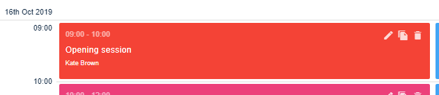
Session selection
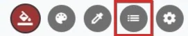
Click on the icon to reveal the panel for choosing from a list of sessions.
There are three options for applying colour:
By
- Individual session
- Track
- Presentation type
Individual session
You will see your sessions in chronological order, (from left to right if more than one column), along with their current colour (dark blue is the default).
P → Colour according to Presentation type
T → Colour according to track
No letter → Colour according to session - ie individually
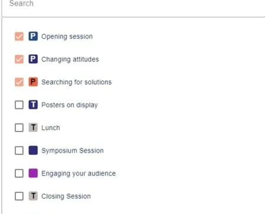
The commands are in the lower part of the panel.
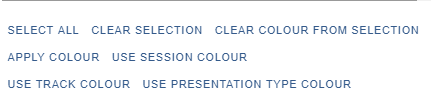
First of all, ensure your paint bucket icon is the colour you have chosen by using the methods described above.
Check the box next to your chosen session (or select multiple or all, if appropriate). Then click Apply colour
NB: Be sure to uncheck your selection after you have made the colour change, otherwise they will be included in your next colour change step.
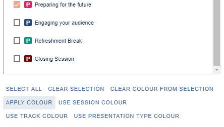
The commands at the bottom can be used if you would like to over-ride previous colour selections.
For instance - if you have applied a colour according to track, and you decide you would like to apply a different colour to individual sessions, click USE SESSION COLOUR.
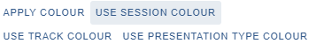
Similarly, if you have applied colour according to presentation type, and you decide you would like to apply the colour according to track, clickUSE TRACK COLOUR.(See below for instructions on setting colours for tracks and presentation types.)
Applying colour by track or presentation type
NB: To set up tracks, see Setting up your program - configuration
If you have created tracks when you set up your program, you have the option to apply colour according to tracks.
First of all you will need to select the colour for each track, as described in Selecting colours(above).
Click the fifth icon (settings)
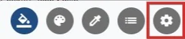
and choose Pick track colours
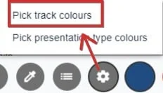
The Track colour selection panel will open up
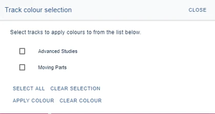
Choose the colour you would like to be applied (see Selecting colours, above).
Select your chosen track, then click APPLY COLOUR.
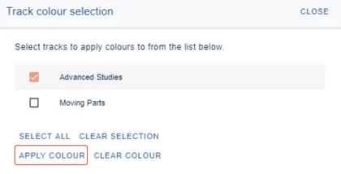
Your tracks will then be coloured accordingly.
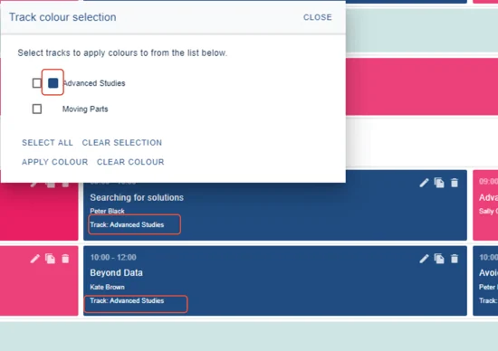
To colour according to presentation type, click the settings icon and choose Pick presentation type colours, and follow the steps described above to pick track colours.
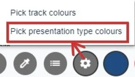
Did this page solve it?
Thanks — this helps us fix it.
Didn't solve it? Ask our support team
No question is too small, and there's no charge for asking. Raise a ticket and someone who knows the software will pick it up.